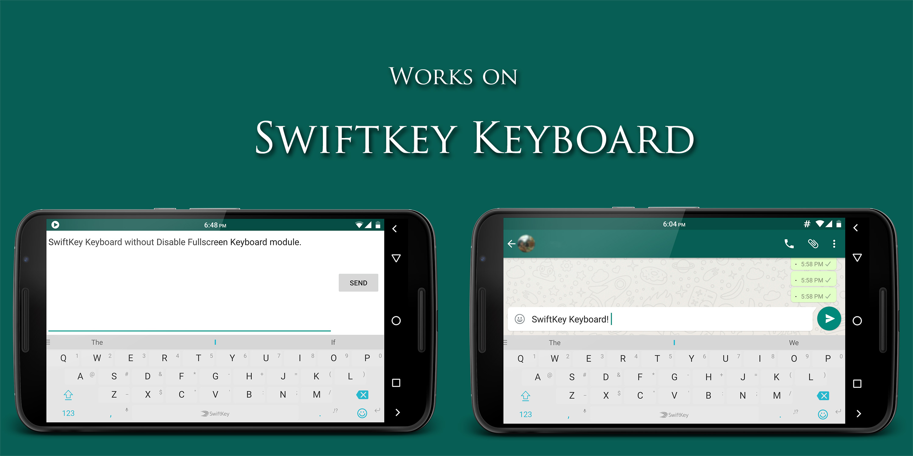
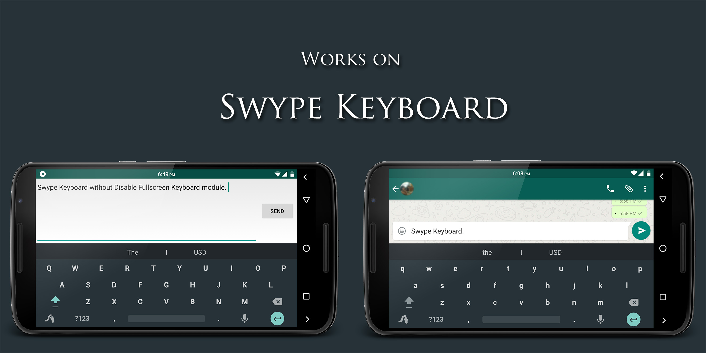
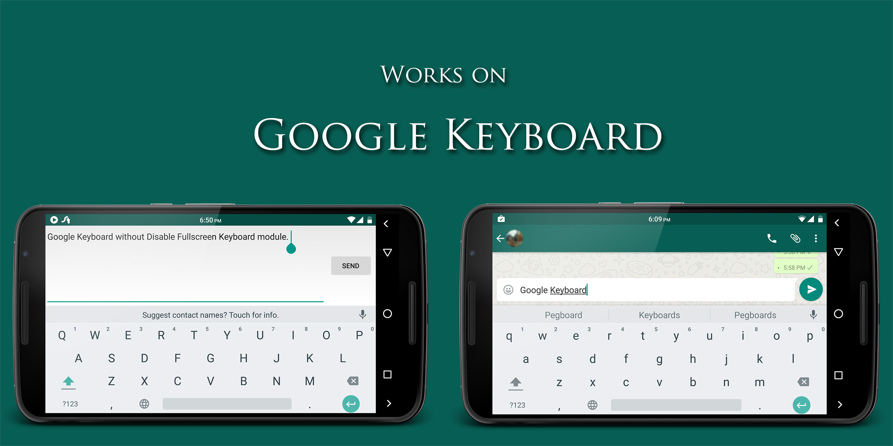

Disable Fullscreen Keyboard
An open source Xposed module for android, to disable fullscreen keyboard along with the text input field that takes up the whole screen in landscape orientation.
It works with all android keyboards, including SwiftKey, Swype, Google keyboard, AOSP keyboard etc.
The module doesn't have a GUI. Just enable it in Xposed Installer, and it will do its magic.
With over 100,000+ downloads through Xposed module repository.
Screenshots



How to use?
- Install Xposed framework for android by the developer rovo89
- Install Disable Fullscreen Keyboard
- Enable Disable Fullscreen Keyboard in Xposed Installer
Support
Bugs reports, suggestions and support can be found on XDA-developers thread for Disable Fullscreen Keyboard.
Requirements
- Xposed framework
- Android 4.0+
Downloads
- Google Play Store
- Releases section in my Github source.
- Xposed module repository
- Support the development or just buy me a beer through the donate version of the module on the Play Store.
Source code
Source code of the app can be found at my Github repository.
Changelog
v1.2
- Add support for SwiftKey Beta Keyboard v6.1+
v1.1
- Add support for latest SwiftKey Keyboard v6.0+
- Disable logcat logs
v1.0
- Initial release
License
The source code is licensed under GNU General Public License v3 (GPL v3)
Copyright
© 2014 - 2015 Shubhang Rathore